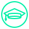
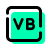

About Me
"I code with purpose, innovate with passion, and transform challenges into opportunities. I didn't just stumble into the world of Tech, I fell in love with it. Sitting behind the screen and building software that will make the world a better place is what I truly enjoy."
Education 
Matatane Secondary School
"I completed matric in year 2023 with an admission to a Bachelors degree, with Aps equal to 34"
University of Johannesburg
"I started studying for Bsc in Computer Sciences and Informatics Extended Course in year 2024, which has a duration of 4 years."
Freecodecamp.org
"I studied Web development online where i gained skills such as html5 and Css3"
skills
University of Johannesburg
Visual-basic 
Freecodecamp.org
Html5
Css3
Experience
1-Visual-basic (10 Months)
2-Codsoft Web-development "4 Weeks" Internship (14 July 2024-14 August 2024)
3-CodXO Web-development "4 Weeks" Internship (01 September 2024-31 September 2024)